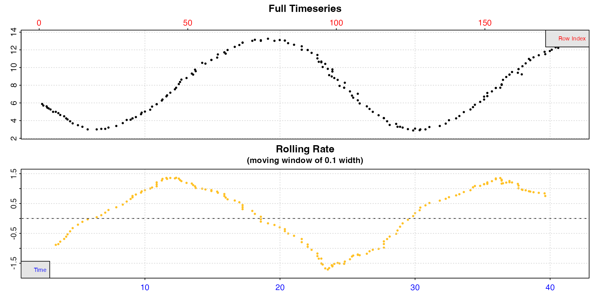
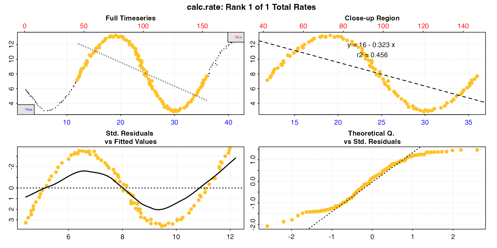

Best practice in respirometry is usually to use linear regression on timeseries recordings of oxygen concentrations to derive a slope and thus rate of oxygen use.
Technically, an overall rate between any two timepoints can be calculated using only two oxygen values as long as they are accurate recordings, and in the past “closed-bottle” respirometry was common, where only the initial and final oxygen concentrations were measured. In the modern day there is little excuse for not using continuous data recordings when it is relatively cheap and easy to do so. Use of only initial and ending oxygen values gives no information about how rates of use may have fluctuated, and such rates are highly sensitive to error and inaccurate readings.
For some applications however, there may be valid reasons for using only two datapoints of oxygen concentration separated by a known time period to calculate a rate. This could be in cases of periodic and irregular oxygen monitoring or sampling in the field, or alternatively where the investigator is not interested in oxygen uptake or productions rates per se, but rather in total oxygen flux over a time period. An example of this is in respirometry studies of sediment communities, where oxygen flux is correlated with transport of other chemicals or nutrients (e.g. Smith Jr. 1987). In such cases, even if continuous data exist, fitting a linear regression to these data may not be appropriate, and in fact could be grossly incorrect. This is particularly the case where oxygen or oxygen use fluctuates significantly over the time period of the experiment, such as with a diurnal rhythm. In such cases linear regressions may be significantly skewed.
respR includes the ability to calculate two-point rates.
While we recommend it not be used for analysis of data from laboratory
based studies looking at organismal metabolic rates, we have
incorporated the functionality for the above use-cases, and for analysis
of historical closed-bottle respirometry data.
This dataset contain recordings of oxygen from an eutrophic lake over a period of 40 hours starting at midnight.
#> hours oxygen
#> 1: 2.39 5.88
#> 2: 2.48 5.70
#> 3: 2.72 5.61
#> 4: 2.77 5.47
#> 5: 2.87 5.38
#> ---
#> 174: 40.99 12.64
#> 175: 40.99 12.87
#> 176: 41.33 12.90
#> 177: 41.33 12.90
#> 178: 41.33 12.90Time is in hours, and oxygen in mg/L. Let’s
inspect() the data.
lake_insp <- inspect(lake, rate.rev = FALSE)
We can see the oxygen in the lake fluctuates with a diurnal rhythm,
increasing over the day and decreasing at night, and the rolling rate
similarly fluctuates. We use rate.rev = FALSE here to force
the rolling rate plot to plot production rates as positive values,
uptake rates as negative.
The researcher wants to know the overall rate of oxygen flux between
12 noon on the first day (hour 12) and 12 noon on the next (hour 36). We
will use calc_rate as we normally would to get the rate
between these two timepoints.
lake_rate <- calc_rate(lake_insp,
from = 12,
to = 36,
by = "time")
It is immediately clear the linear regression based rate completely misrepresents the overall oxygen flux and instead of a small net oxygen flux, suggests there is a large net oxygen consumption.
summary(lake_rate)
#>
#> # summary.calc_rate # -------------------
#> Summary of all rate results:
#>
#> rep rank intercept_b0 slope_b1 rsq row endrow time endtime oxy endoxy rate.2pt rate
#> 1: NA 1 16 -0.323 0.456 42 147 11.9 36 7.16 7.69 0.0221 -0.323
#> -----------------------------------------However, looking at the summary we can see the $rate.2pt
as the second from last column. This is simply the oxygen differential
between the two timepoints divided by the time difference, and shows us
there was a slight net oxygen production. In this case, this rate is
much more relevant towards the research question.
This two-point rate will not be the one converted if we pass the
calc_rate object to convert_rate, however we
can enter the two-point rate as a value to convert the rate to
units.
lake_rate_conv <- convert_rate(0.02213001,
oxy.unit = "mg/l",
time.unit = "hrs",
output.unit = "umol/h",
volume = 1)Alternatively, extract it directly.
lake_rate_conv <- convert_rate(lake_rate$rate.2pt,
oxy.unit = "mg/l",
time.unit = "hrs",
output.unit = "umol/h",
volume = 1)
#> convert_rate: Numeric input detected. Converting all numeric rates.
# print
lake_rate_conv
#>
#> # print.convert_rate # ------------------
#> Rank 1 of 1 rates:
#>
#> Input:
#> [1] 0.0221
#> [1] "mg/L" "hr"
#> Converted:
#> [1] 0.692
#> [1] "umolO2/hr"
#>
#> To see full results use summary().
#> -----------------------------------------Note here the volume input. This is not a respirometry
experiment, so there is no “volume” as such. In this situation this
should refer to the volume used in the oxygen concentration unit (in
this case litres), so the rate is dimensionally relative to any
volume of this lake. This will be the case for any units of oxygen,
because internally they are all converted to mg/L before conversion to
the output units, so for use cases like the above it should always be
entered as 1.
We can verify our hourly rate is correct using the $oxy
and $endoxy values from the summary table. If we convert
these to umol/L, then divide the difference by the time
taken (24h) then we should get the same result.
# start conc
convert_DO(7.16, from = "mg/l", to = "umol/L")
#> [1] 223.8
# end conc
convert_DO(7.69, from = "mg/l", to = "umol/L")
#> [1] 240.3
# Total in umol produced over this 24h period per L
240.3 - 223.8
#> [1] 16.5
# umol produced per hour per Litre of lake over 24h
16.5/24
#> [1] 0.6875We can see this is very close to the same result. The difference is simply due to the higher precision of internal values compared to what we have entered here.